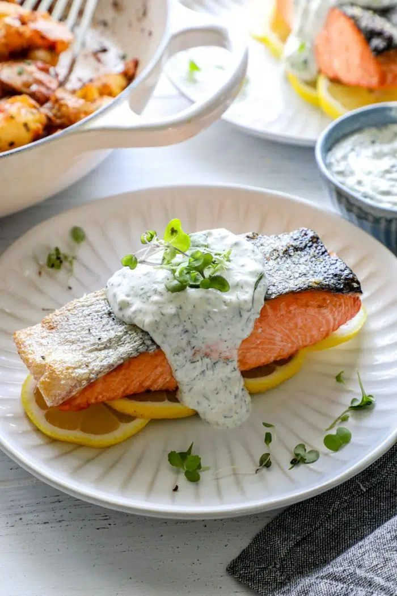

Salmon Recipe
<<<<<<< HEAD

=======
>>>>>>> 8d887cdbdd61a053d898f3b9c82ef7b5d69e1a7d
Ingredients Needed
Salmon
Herbes de Provence
Salt
Black pepper
Smoked paprika
Olive oil
Garlic butter
Instructions
Dry. Use a paper towel to dry your salmon fillets. Double-check to make sure that there are no bones in the fish.
Add the oil. Pour the oil on your fish, and rub it on both sides.
Season. Mix the herbs and spices together and sprinkle them on both sides of the fish.
Cook. Turn the air fryer on to 390F. Cook until the fish can easily be flaked with a fork. This should take 5-8 minutes.
Melt the butter. While the fish is cooking, melt the butter in the microwave.
Add the butter. When the salmon comes out of the air fryer, pour the melted butter over it, and serve immediately.
<<<<<<< HEAD